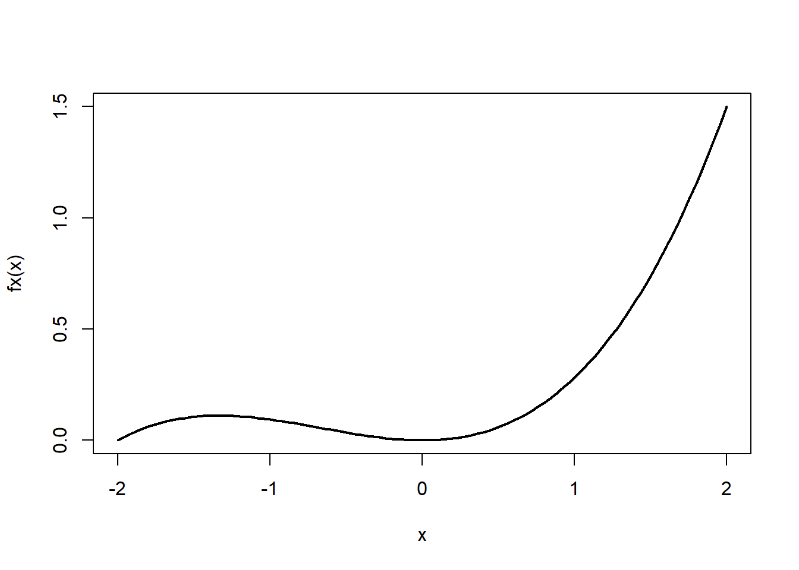
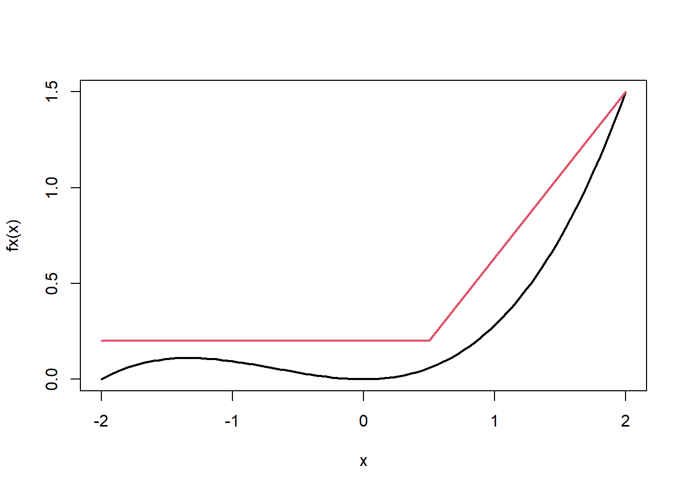

7 O método da aceitação/rejeição
7.1 Introdução ao método
Considere que desejamos simular amostras da variável aleatória contínua \(X\), com função densidade dada por \(f(x)\). O método da aceitação/rejeição usa um simulador de uma variável aleatória com densidade \(g(.)\). O objetivo é selecionar amostras simuladas de \(Y\) que são estocasticamente equivalentes à \(X\).Esta é uma das técnicas mais importantes de geração de números aleatórios.
A ideia básica deste método é escolher uma variável \(Y\) fácil de simular cuja densidade \(g(.)\) satistaz
\[f(x)\leq cg(x)\] para todo \(x\), para algum c>0. A função de densidade \(g(.)\) é denominada proposta ou instrumental, enquanto que \(cg(.)\) é denominada função majorante ou envelope.
Algoritmo. Método da aceitação/rejeição
Gere \(y\sim g(.)\) e \(u\sim\hbox{Uniforme}(0,1)\).
Se \(u< f(y)/cg(y)\), faça \(x=y\). Senão, volte ao passo 1.
Vamos mostrar que o algoritmo de fato gera amostras de \(X\), com \(X\in D\subseteq \mathbb{R}^d\). Note que a condição do passo 2 pode ser reescrita como
\[ucg(y)<f(y).\]
Seja \(Z=Ucg(Y)\). Então, \(Z|Y=y\sim \hbox{Uniforme}(0,cg(y))\) e
\[f_{Z,Y}(z,y)=f_{Z|Y}(z)g(y)=\frac{1}{cg(y)}I(0<z<cg(y))g(y)=\frac{1}{c}I_S((z,y))\]
ou seja, \((Z,Y)\sim\hbox{Uniforme}(S)\) onde
\[S=\{(z,y):y\in D,0<z<cg(y)\}.\]
Agora, como \(c>0\) é uma constante que garante que \(f(x)\leq cg(x)\) para todo \(x\), teremos que \(V\subset S\), onde
\[V=\{(z,y):y\in D,0<z<f(y)\}.\]
Logo, \((Z,Y)|(Z,Y)\in V\sim\hbox{Uniforme}(V)\) e, portanto, \(Y|(Z,Y)\sim f(.).\)
Note que o método da aceitação/rejeição é uma aplicação direta do método da uniforme multivariada com marginais não uniformes. Lembremos que a probabilidade de aceitar um par simulado é
\[\frac{Vol(V)}{Vol(S)}=\frac{1}{c},\]
então quanto mais próximo o envelope \(cg(.)\) está de \(f(.)\), melhor é o método AR. A figura abaixo ilustra os conceitos vistos até aqui.
Example 7.1 Considere o problema de simular de \(X\sim\)Normal(0,1) através do método da aceitação/rejeição utilizando como proposta a distribuição Laplace(\(a\)), cuja função densidade é dada por
\[g(y)=\frac{a}{2}e^{−a|x|},\]
com \(x\in\mathbb{R}\) e \(a>0\). Note que é fácil simular de \(Y\) pois
\[G(y)=\left\{\begin{array}{ll}\frac{1}{2}e^{ay},& y\leq 0 \\ 1−\frac{1}{2}e^{−ay},&y>0\end{array}\right.\]
o que implica em
\[G^{−1}(u)=\left\{\begin{array}{ll}\frac{\log(2u)}{a},& u\leq \frac{1}{2}\\ -\frac{\log(2(1−u))}{a},& u>\frac{1}{2}\end{array}\right.\]
o que implica que a proposta pode ser facilmente simulada via método da inversão. Teremos
\[\begin{align}\frac{f(x)}{g(x)}&=\frac{\frac{1}{\sqrt{2\pi}}e^{-\frac{x^2}{2}}}{\frac{a}{2}e^{-a|x|}}=\frac{1}{a}\sqrt{\frac{2}{\pi}}e^{-\frac{x^2}{2}+a|x|}=\frac{1}{a}\sqrt{\frac{2}{\pi}}e^{-\frac{|x|^2}{2}+a|x|}\\ &=\frac{1}{a}\sqrt{\frac{2}{\pi}}e^{-\frac{1}{2}(|x|-a)^2+\frac{a^2}{2}}\leq \frac{1}{a}\sqrt{\frac{2}{\pi}}e^{\frac{a^2}{2}}\end{align}\] e, através do cálculo diferencial, pode-se mostrar facilmente que o mínimo de \(a^{−1}e^{a^2/2}\) é atingido em \(a=1\). Logo
\[\frac{f(x)}{g(x)}≤\sqrt{\frac{2}{\pi}}e^{\frac{1}{2}}<1,3155\]
Fazendo \(c=1,3155\), teremos que o número médio de tentativas até o primeiro aceite será 1,3155.
# simulador da Laplace(0,1)
r_Laplace <- function(){
u <- runif(1)
ifelse( u< .5, x <- log(2*u), x<- -log(2*(1-u)))
} # simulador da Normal(0,1) usando Laplace(0,1) como proposta
# simulador da normal via método AR (proposta Laplace)
r_norm <- function(){
x <- NA
while( is.na(x)){
# gerando um candidato
y <- r_Laplace()
# razao f/c*g
razao <- sqrt(2/pi)*exp(-.5*y^2 + abs(y) )/1.3155
# verificando se o candidato é aceito
u <- runif(1)
if( u < razao){ x <- y}
}
return(x)
} Abaixo ilustramos o algoritmo acima com uma amostra simulada de tamanho 1.000.
# amostra simulada
x <- sapply( 1:1000, function(x) r_norm() )
hist(x, freq = F, main ="", col = 4, border = 4, ylim=c(0,.7), xlab = "")
curve(dnorm(x), add = T, lwd = 3)
envelope <- function(x) 1.3155*(1/2)*exp(-abs(x))
curve(envelope(x),add=T, lwd = 3, col = 2)
legend("topright", c("Normal(0,1)","envelope"), col =c(1,2),lwd = 3, bty = "n")
Exercício. Dizemos que \(X\) tem distribuição normal assimétrica se função densidade é dada por
\[f(x)=2\phi(x)\Phi(ax),\] onde \(x\in\mathbb{R}\), \(\phi(.)\) e \(\Phi(.)\) são a função densidade e distribuição da normal padrão e \(a\in\mathbb{R}\). O parâmetro \(a\) é denominado assimetria, sendo que \(f(x)\) se torna a normal padrão quando \(a=0\).
Utilizando como proposta a distribuição normal, construa um simulador para gerar amostras de \(f\) utilizando o método AR. Qual é o número esperado de tentativas até obter um sucesso?
7.2 Construindo a densidade proposta com uma função linear por partes
No método da aceitação/rejeição para simular uma amostra se \(f\), devemos encontrar uma função de densidade \(g\), fácil de simular, que satisfaça
\[f(x)\leq cg(x)\]
para algum \(c>0\) e para todo \(x\) no suporte de \(f\). Agora, seja \(g^∗(.)\) uma função real positiva que satisfaz
\[f(x)\leq g^*(x),\]
para todo \(x\). Note que $g^* é a função envelope. Então, sem perda de generalidade, podemos fazer
\[f(x)\leq \underbrace{\frac{g^*(x)}{\int g^*(t)dt}}_{g(x)} \underbrace{\int g^*(t)dt}_{c}.\]
Portanto, podemos primeiro construir uma função envelope e em seguida transformá-la na densidade proposta. Envelopes podem ser construídos utilizando uma função linear por partes, uma vez que é fácil simular desta distribuição.
Example 7.2 Considere que desejamos simular amostras da variável \(X\) com densidade dada por
\[f(x)= \frac{3}{16}\left(x^2+\frac{1}{2}x^3\right),\] onde \(x\in(-2,2)\). Esta densidade é dada abaixo:
fx <- function(x) (3/16)*(x^2+.5*x^3)
curve( fx(x),-2,2, lwd = 2)
Com um pouco de tentativa e erro, vamos construir o seguinte envelope:
\[g^*(x)=\left\{\begin{array}{ll}\frac{2}{10},&x\in\left(-2,\frac{1}{2}\right)\\ \frac{13}{15}x-\frac{7}{30},&x\in\left[\frac{1}{2},2\right) \end{array}\right.\]
Abaixo, apresentamos \(f(x)\) com o envelope (em vermelho).
curve( fx(x), -2,2, lwd = 2)
segments(-2,.2,.5,.2 , lwd =2, col =2)
segments(.5,.2,2,(3/16)*8, lwd = 2, col =2)
Como,
\[c=\int_{-2}^{2}g^*(x)dx=\frac{71}{40}\] a função densidade proposta baseada no envelope é dada por \(g(x)= g^*(x)/c\). Observe que a função distribuição da proposta é dada por
\[G(x)=\left\{\begin{array}{ll} 0, & x < -2 \\ \frac{8x + 16}{71}, & x \in [-2, 1/2) \\ \frac{52x^2 - 28x + 61}{213}, & x \in [1/2, 2) \\ 1, & x \ge 2 \end{array}\right.\]
e sua inversa é dada por
\[G^{-1}(u)=\left\{\begin{array}{ll} \frac{71u - 16}{8}, & u \in [0, \frac{20}{71}) \\ \frac{7 + \sqrt{2769u - 744}}{26}, & u \in [\frac{20}{71}, 1] \end{array}\right.\]
Podemos então simular da proposta pelo método da inversão:
Simule \(u\sim\hbox{Uniforme}(0,1)\)
Se \(u<20/71\), faça \[x=\frac{71u-16}{8}.\] Senão, faça \[x=\frac{7+\sqrt{2769u-744}}{26}\]
Abaixo, segue a implementação da proposta
rproposta <- function(){
u <- runif(1)
if(u < 20/71){
x = ( 71 * u - 16 )/8
} else{
x = ( 7 + sqrt(2769*u - 744))/26
}
x
}Podemos finalmente simular \(X\) utilizando o método AR, como segue
Simule \(y\) da proposta \(g\)
Simule \(u\sim\hbox{Uniforme}(0,1)\). Se \[u<\frac{f(y)}{cg(y)}\] então \(x=y\). Caso contrário, volte ao passo 1.
Abaixo, simulamos uma amostra de tamanho \(50000\) da distribuição de \(X\).
# função envelope
gs <- function(x){
if(x < .5){
resposta <- .2
} else{
resposta <- (13/15)*x - (7/30)
}
resposta
}
k <- 0
x <- NULL
while(k < 50000){
y <- rproposta()
u <- runif(1)
razao <- fx(y)/gs(y)
if( u < razao ){
k <- k+1
x[k] <- y
}
}
hist(x, freq = FALSE)
curve(fx(x),add=T, lty =2)
Exercício.
Considere que \(x\in(a,b)\). Um envelope simples pode ser gerado particionando o intervalo \((a,b)\). Considerando a partição \((a_i,b_i)\), você pode encontrar \(d_i\) tal que
\[d_i>f(x),\hbox{ para todo }x\in(a_i,b_i)\] e então, definir \[g^*(x)=d_i,\hbox{ se }x\in(a_i,b_i).\]
\[g^*(x)=d_i.\]
Considerando a função densidade dada por
\[f(x)=\frac{16\pi^3}{\pi^2 - 8}x^2\cos(2\pi x),\] com \(x\in(-1/4,1/4)\) e uma proposta definida a partir do envelope proposto nesse exercício, simule uma amostra de tamanho 5.000 de \(f(x)\).